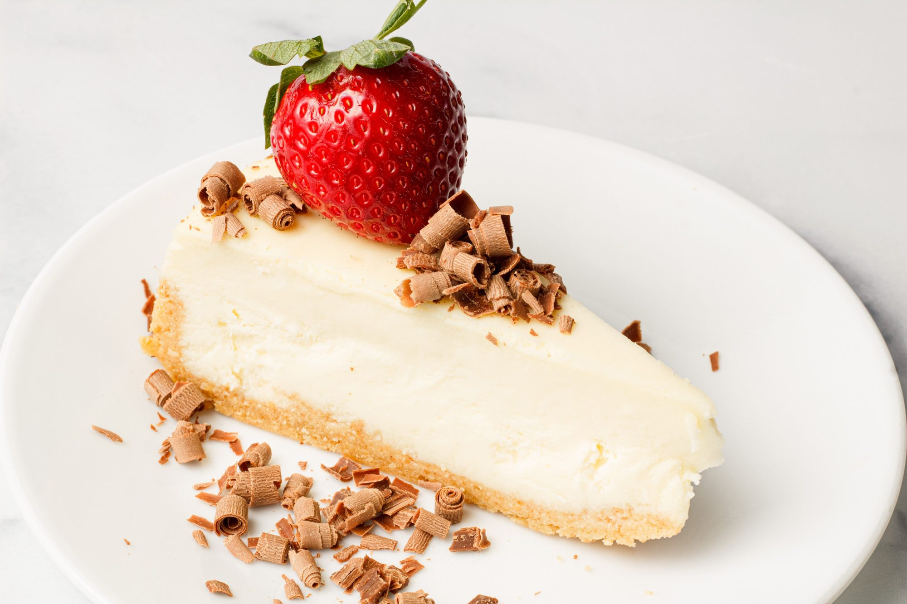
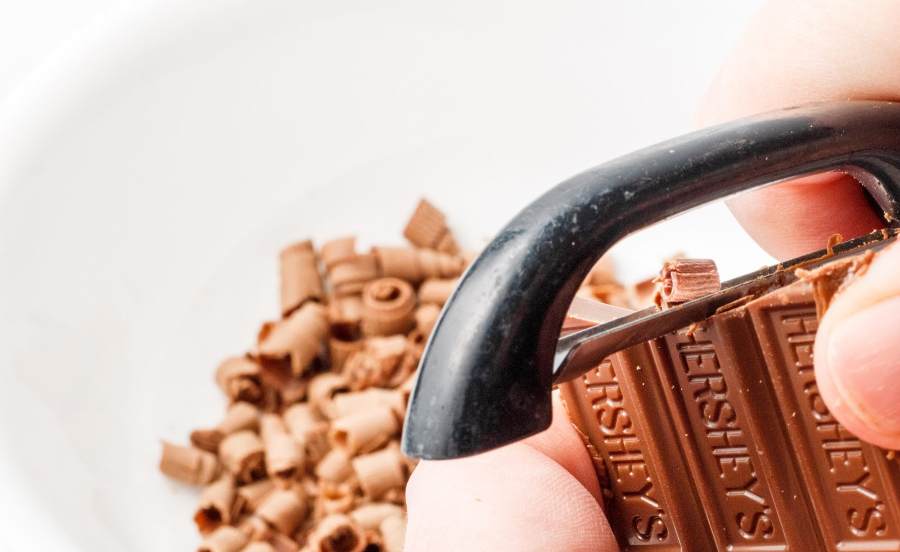
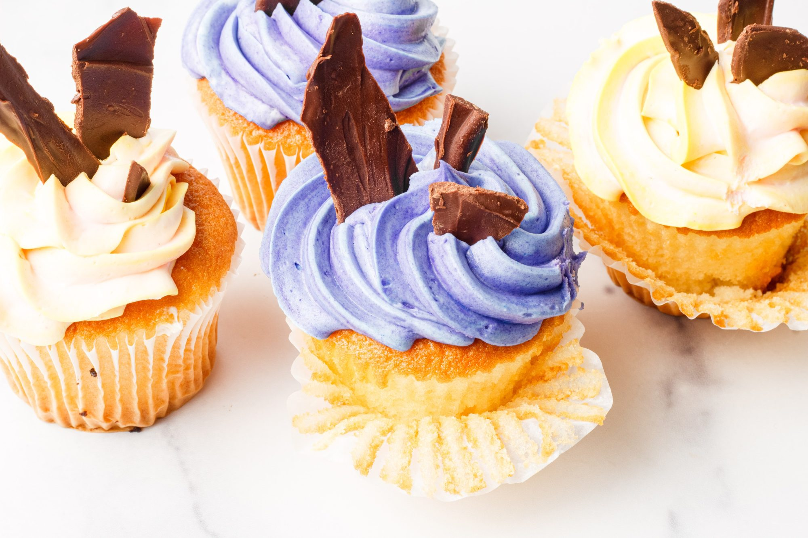
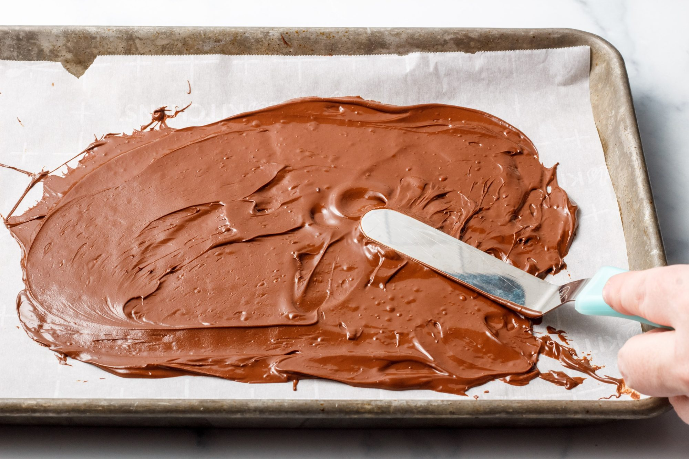
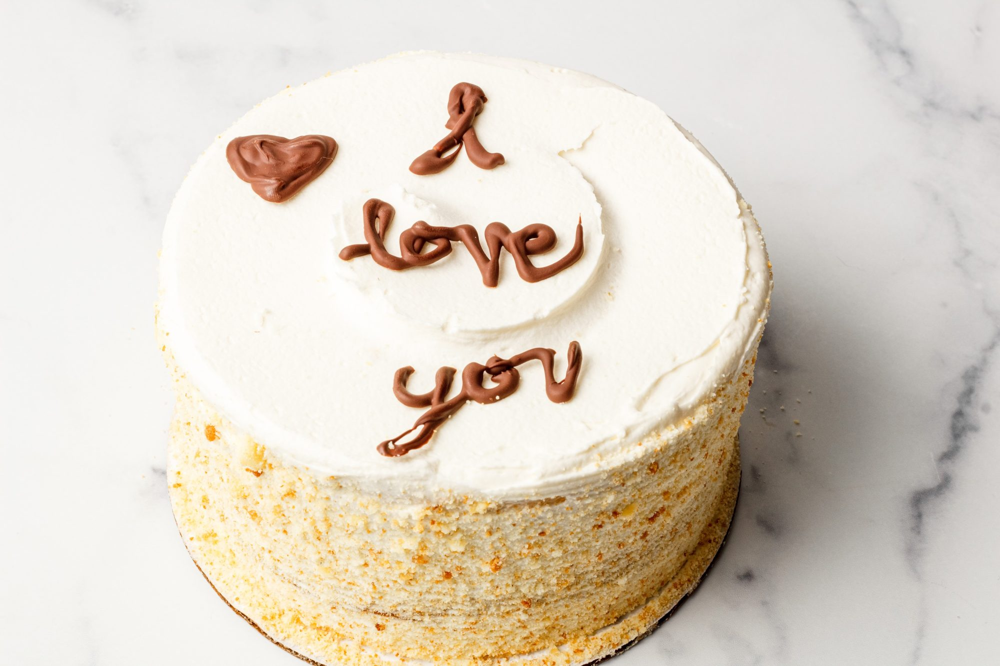
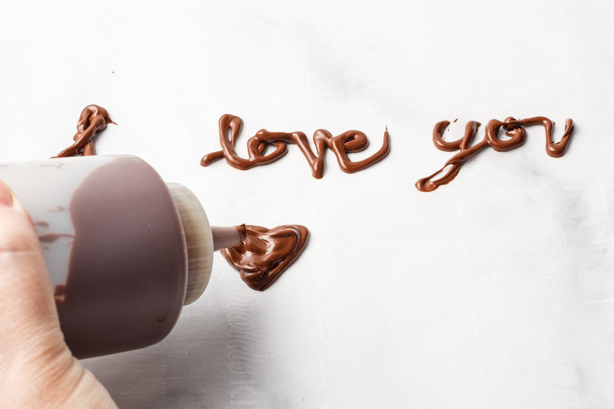
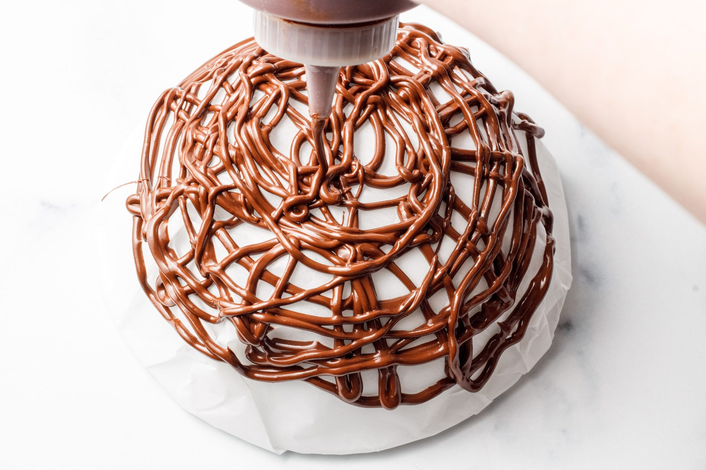
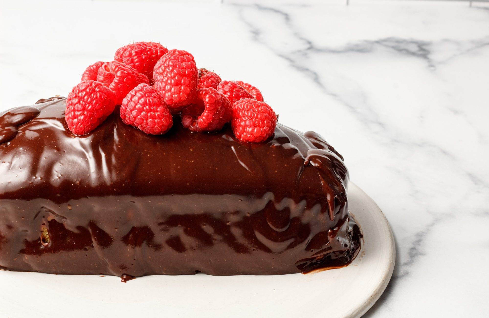
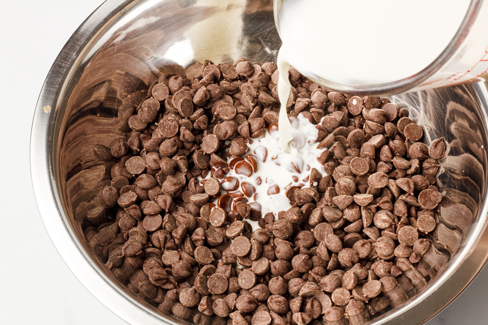

1. Chocolate Curls

When I think of decorating with chocolate, curls are the first thing that comes to mind. These come in various sizes and can be used to top pretty much any dessert.
What you need:
* 2-3 chocolate bars
* A vegetable peeler
Technique:
Place your vegetable peeler on either the broad side or the short side of the chocolate bar as seen below and gently start to run it across the chocolate. The broad side will give you bigger curls, whereas the shorter side will give you mini curls. Use these to decorate any dessert you like.

Tips
If your curls are breaking apart or not coming out as large as you'd hoped, try getting a larger chunk of the chocolate in the peeler when you start. Play around with it until you get the size you want.
2. Chocolate Shards

Shards are another really popular chocolate decorating technique. They can be used in a variety of ways, including how I used them on top of cupcakes. Another of my favorite ways is to use them as a border around a frosted cake. This works especially great for a woodsy theme. Making a bûche de Noël for Christmas? Thin chocolate shards make realistic-looking edible bark.
What you need
* A 12-ounce bag of semi-sweet chocolate chips
* Medium-sized, microwave-safe bowl
* Parchment paper
* An offset spatula (the angled blade makes spreading easier)
* Medium-sized baking sheet
Technique:
Begin by placing a piece of parchment that covers the entire baking sheet.
Next, add the chocolate chips to the microwave-safe bowl. Melt the chocolate in 10-second increments in the microwave, stirring between each 10-second increment. Once it's melted, spread it onto the parchment lined baking sheet as seen below.

Place the baking sheet in the freezer for 20 minutes. Once the chocolate is hard to the touch, pull it out of the freezer and work quickly.Carefully roll the parchment paper as seen below. You will hear and feel the chocolate crunching and breaking apart. This creates your shards.
You might be tempted to use a pizza cutter for crisper, more defined edges on your shards, but that will make your chocolate crumble. Stick with using your hands for the best results. If the chocolate shards are too large you can then break them into smaller pieces with your hands. That all depends on how you plan to use them.
3. Writing with Melted Chocolate

Writing words and making shapes with chocolate is one of my favorite ways to decorate. Plus I find writing with melted chocolate much easier than writing with those premade icing tubes they sell in stores.
What you need
* A plastic reusable squeeze bottle
* 1 12-ounce bag of semi-sweet chocolate chips
* Parchment paper
* A straight or offset spatula
* A medium-sized baking sheet
Technique:
Begin by placing a piece of parchment that covers the entire baking sheet.
Next, add the chocolate chips to the microwave-safe bowl. Melt the chocolate in 10-second increments in the microwave, stirring between each 10-second increment. Work quickly once the chocolate is melted.
Using the spatula add the melted chocolate to the plastic bottle. This step can be a little messy so I suggest holding the bottle over the bowl as you add the chocolate to the bottle. Then place the lid back onto the bottle and use a kitchen towel or paper towel to clean any excess chocolate off of the squeeze bottle. Next, gently squeeze the chocolate out of the bottle onto the parchment-lined baking sheet to create your words and shapes.
If you want to improve the look of your writing, take a separate piece of paper and print, write, or draw whatever design you want to use and place that under the parchment paper. Then you can trace the design using the design showing through the translucent parchment paper as your guide. Never pipe chocolate directly onto the written or printed words. Ink is not food safe.

Freeze the baking sheet with your writing for about 20 minutes so it becomes stiff. Now you are ready to use a the thin blade of your clean spatula to remove the chocolate from the parchment paper and use it to decorate. I added mine to a frosted cake for a simple message. SO much easier than trying to pipe directly onto the cake.
4. Chocolate Nests
These are, in my opinion, the most impressive of all the techniques shared in this piece. Chocolate nests can be used for a variety of desserts. You can make them mini to go on top of cupcakes or larger to go on top of cakes, as I did. And the possibilities of items to place inside the nests are endless! I stuffed my nest with strawberries, but you could easily use candy hearts for Valentine's Day, candy eggs for Easter, and pumpkin candies for Halloween.
What you need
* 1 small- to medium-sized bowl
* 1 medium microwave-safe bowl
* A plastic reusable squeeze bottle
* Parchment paper
* 1 12-ounce bag of semi-sweet chocolate chips
* A strait or offset spatula
Technique:
First prepare your bowl by lightly crumpling a sheet of parchment paper, then wrapping the outside of the bowl in the parchment paper until it's completely covered, then setting it upside down. Parchment paper will hold its shape well if it's slightly crumpled, so you shouldn't need to tape it to the bowl.
Next, add the chocolate chips to the microwave-safe bowl. Melt the chocolate in 10-second increments in the microwave, stirring between each 10-second increment. Work quickly once the chocolate is melted.
Using the spatula, add the melted chocolate to the plastic bottle. Gently squeeze the melted chocolate onto the parchment-covered bowl in circular and crisscross designs, as seen below, to create the nest.

Freeze the bowl with the nest design for 20-30 minutes until it's stiff to the touch. Then flip the bowl upside down, cradling the nest in one (cold) hand and gently pulling away the bowl and the parchment paper, being careful not to break the design. Quickly place the nest onto the cake because it will want to melt in your hands. Now fill it with whatever fruit or candies you like.
5. Ganache Glaze
When I first started baking I remember being so intimidated by ganache. It was one of those really elusive, fancy dessert elements that seemed totally unattainable for a home cook like me. But I couldn't have been more wrong! Not only is ganache super easy to make, but it only uses two everyday ingredients: chocolate and cream. And it can be used in so many different ways such as fillings for homemade chocolates, whipped ganache frosting, and cake glazes (as seen below).
What you need
* Medium to large bowl
* Whisk
* 1 12-ounce bag of semi-sweet chocolate chips
* 1 ¼ cup heavy whipping cream
Technique:
Add the chocolate to the medium- to large-sized bowl. Heat the cream in the small microwave-safe bowl in increments of 12 seconds until it feels hot to the touch. Once it's hot, pour it over the chocolate chips as seen below. Do not stir yet. Place a lid or plate on top of the bowl and leave covered for 10 minutes to let the hot cream melt the chocolate.

After 10 minutes, remove the lid and whisk together until smooth. If any unmelted chips remain, simply pour the ganache mixture into a microwave safe bowl and reheat in 5-second intervals until it's able to be whisked into a completely smooth mixture.
Allow the ganache to cool slightly before pouring over a cake. Pour it slowly over the center of your cake as seen below, working your way around the entire cake. You may want to do this over a wire rack, so all the excess chocolate drips below the cake instead of pooling on the sides. Then you can use the extra drippings for another fun ganache recipe.

No matter if you are just starting out or you are a seasoned home chef, these fun chocolate decorations are sure to make your desserts the talk of the town!